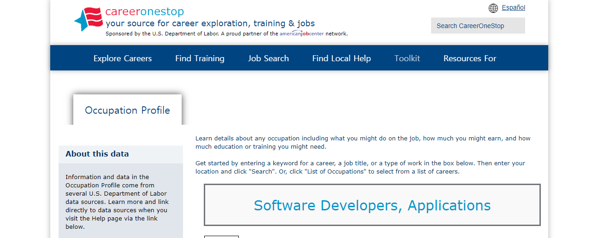

Software Engineer

Click image to get webpage url
This website presents a brief explanation of software engineer, current job opportunity, typical wages and required abilities. They define software engineer as an occupation which analyzes issues and solves the problem by developing software. Software engineers are expected to not only create, modify and optimize programs but also design databases sometimes. To become a software engineer, some competencies like programming, critical thinking and problem-solving skills will probably be required.
This video contains an interview of Surabhi Gupta who is a software engineer in Airbnb. She explained her motivation to get the occupation, tools that she uses, a typical day at work and several challenges. She believes that her motivation to become a software engineer was impacted by her brother since her brother prefers to study mathematics. Mostly she spends her time to figure out errors of the program and modify and review codes of other colleagues. The biggest challenge for her is evaluating priorities of issues in programming because it may be impossible to resolve all problems until the planned release date. She also suggests that keeping perseverance is a crucial key to solving problems.
Description
.png)
The major responsibilities of a software engineer are to build and modify the software. They also evaluate the program regularly to improve performance. Most software engineers work as part of a team. They review code from other colleagues. They also open team meetings to figure out the error and the most efficient method to optimize. They usually work with a client to analyze the needs of the customer. Therefore, communication skill might be needed.
.png)
They frequently spend their time handling the code of a program. They blueprint, test, develop software and debug errors. Moreover, they study programming languages to follow rapid technology advancement. The common difficulties may be providing a durable security system to prevent stealing data from a hacker, conflicts among team members, dealing with problems due to updating versions of languages and insufficient experience on new computer languages.